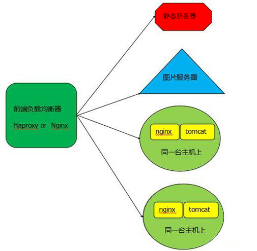

12月1日
笔记
范数
范数(norm)是数学中的一种基本概念。在泛函分析中，它定义在赋范线性空间中，并满足一定的条件，即①非负性；②齐次性；③三角不等式。它常常被用来度量某个向量空间（或矩阵）中的每个向量的长度或大小。
Honey Pot Projects
垃圾邮件分类项目
Porter Stemmer
波特词干提取法
apt与apt-get
Debian 作为 Ubuntu、Linux Mint 和 elementary OS 等 Linux 操作系统的母板，其具有强健的「包管理」系统，它的每个组件和应用程序都内置在系统中安装的软件包中。Debian 使用一套名为 Advanced Packaging Tool（APT）的工具来管理这种包系统，不过请不要把它与 apt 命令混淆，它们之间是其实不是同一个东西。
Debian 作为 Ubuntu、Linux Mint 和 elementary OS 等 Linux 操作系统的母板，其具有强健的「包管理」系统，它的每个组件和应用程序都内置在系统中安装的软件包中。Debian 使用一套名为 Advanced Packaging Tool（APT）的工具来管理这种包系统，不过请不要把它与 apt 命令混淆，它们之间是其实不是同一个东西。
如果你已阅读过我们的 apt-get 命令指南，可能已经遇到过许多类似的命令，如apt-cache、apt-config 等。如你所见，这些命令都比较低级又包含众多功能，普通的 Linux 用户也许永远都不会使用到。换种说法来说，就是最常用的 Linux 包管理命令都被分散在了 apt-get、apt-cache 和 apt-config 这三条命令当中。
apt 命令的引入就是为了解决命令过于分散的问题，它包括了 apt-get 命令出现以来使用最广泛的功能选项，以及 apt-cache 和 apt-config 命令中很少用到的功能。
在使用 apt 命令时，用户不必再由 apt-get 转到 apt-cache 或 apt-config，而且 apt 更加结构化，并为用户提供了管理软件包所需的必要选项。
简单来说就是：apt = apt-get、apt-cache 和 apt-config 中最常用命令选项的集合。
apt与apt-get之间的区别
通过 apt 命令，用户可以在同一地方集中得到所有必要的工具，apt 的主要目的是提供一种以「让终端用户满意」的方式来处理 Linux 软件包的有效方式。
apt 具有更精减但足够的命令选项，而且参数选项的组织方式更为有效。除此之外，它默认启用的几个特性对最终用户也非常有帮助。例如，可以在使用 apt 命令安装或删除程序时看到进度条。
apt 还会在更新存储库数据库时提示用户可升级的软件包个数。
如果你使用 apt 的其它命令选项，也可以实现与使用 apt-get 时相同的操作。
apt和apt-get命令之间的区别
虽然 apt 与 apt-get 有一些类似的命令选项，但它并不能完全向下兼容 apt-get 命令。也就是说，可以用 apt 替换部分 apt-get 系列命令，但不是全部。
| apt 命令 | 取代的命令 | 命令的功能 |
|---|---|---|
| apt install | apt-get install | 安装软件包 |
| apt remove | apt-get remove | 移除软件包 |
| apt purge | apt-get purge | 移除软件包及配置文件 |
| apt update | apt-get update | 刷新存储库索引 |
| apt upgrade | apt-get upgrade | 升级所有可升级的软件包 |
| apt autoremove | apt-get autoremove | 自动删除不需要的包 |
| apt full-upgrade | apt-get dist-upgrade | 在升级软件包时自动处理依赖关系 |
| apt search | apt-cache search | 搜索应用程序 |
| apt show | apt-cache show | 显示安装细节 |
当然，apt 还有一些自己的命令：
| 新的apt命令 | 命令的功能 |
|---|---|
| apt list | 列出包含条件的包（已安装，可升级等） |
| apt edit-sources | 编辑源列表 |
需要大家注意的是：apt 命令也还在不断发展， 因此，你可能会在将来的版本中看到新的选项。
| apt-get已弃用？ |
|---|
| 目前还没有任何 Linux 发行版官方放出 apt-get 将被停用的消息，至少它还有比 apt 更多、更细化的操作功能。对于低级操作，仍然需要 apt-get。 |
| 我应该使用apt还是apt-get？ |
|---|
| 既然两个命令都有用，那么我该使用 apt 还是 apt-get 呢？作为一个常规 Linux 用户，系统极客建议大家尽快适应并开始首先使用 apt。不仅因为广大 Linux 发行商都在推荐 apt，更主要的还是它提供了 Linux 包管理的必要选项。 |
最重要的是，apt 命令选项更少更易记，因此也更易用，所以没理由继续坚持 apt-get。
Tomcat、Apache、Nginx

一、 定义：
1. Apache
Apache HTTP服务器是一个模块化的服务器，可以运行在几乎所有广泛使用的计算机平台上。其属于应用服务器。Apache支持支持模块多，性能稳定，Apache本身是静态解析，适合静态HTML、图片等，但可以通过扩展脚本、模块等支持动态页面等。
（Apche可以支持PHPcgiperl,但是要使用Java的话，你需要Tomcat在Apache后台支撑，将Java请求由Apache转发给Tomcat处理。） 缺点：配置相对复杂，自身不支持动态页面。
2. Tomcat：
Tomcat是应用（Java）服务器，它只是一个Servlet(JSP也翻译成Servlet)容器，可以认为是Apache的扩展，但是可以独立于Apache运行。
3. Nginx
Nginx是俄罗斯人编写的十分轻量级的HTTP服务器,Nginx，它的发音为“engine X”，是一个高性能的HTTP和反向代理服务器，同时也是一个IMAP/POP3/SMTP 代理服务器。
二、 区别
1. Apache与Tomcat的比较
相同点：
- 两者都是Apache组织开发的
- 两者都有HTTP服务的功能
- 两者都是免费的
不同点：
- Apache是专门用了提供HTTP服务的，以及相关配置的（例如虚拟主机、URL转发等等），而Tomcat是Apache组织在符合Java EE的JSP、Servlet标准下开发的一个JSP服务器.
- Apache是一个Web服务器环境程序,启用他可以作为Web服务器使用,不过只支持静态网页如(ASP,PHP,CGI,JSP)等动态网页的就不行。如果要在Apache环境下运行JSP的话就需要一个解释器来执行JSP网页,而这个JSP解释器就是Tomcat。
- Apache:侧重于HTTPServer ，Tomcat:侧重于Servlet引擎，如果以Standalone方式运行，功能上与Apache等效，支持JSP，但对静态网页不太理想；
- Apache是Web服务器，Tomcat是应用（Java）服务器，它只是一个Servlet(JSP也翻译成Servlet)容器，可以认为是Apache的扩展，但是可以独立于Apache运行。
实际使用中Apache与Tomcat常常是整合使用：
- 如果客户端请求的是静态页面，则只需要Apache服务器响应请求。
- 如果客户端请求动态页面，则是Tomcat服务器响应请求。
- 因为JSP是服务器端解释代码的，这样整合就可以减少Tomcat的服务开销。
可以理解Tomcat为Apache的一种扩展。
2. Nginx与Apache比较
- nginx相对于apache的优点
- 轻量级，同样起web 服务，比apache占用更少的内存及资源
- 抗并发，nginx 处理请求是异步非阻塞的，而apache 则是阻塞型的，在高并发下nginx 能保持低资源低消耗高性能
- 高度模块化的设计，编写模块相对简单
- 提供负载均衡
- 社区活跃，各种高性能模块出品迅速
- apache 相对于nginx 的优点
- apache的 rewrite 比nginx 的强大 ；
- 支持动态页面；
- 支持的模块多，基本涵盖所有应用；
- 性能稳定，而nginx相对bug较多。
- 两者优缺点比较
- Nginx 配置简洁, Apache 复杂 ；
- Nginx 静态处理性能比 Apache 高 3倍以上 ；
- Apache 对 PHP 支持比较简单，Nginx 需要配合其他后端用；
- Apache 的组件比 Nginx 多 ；
- apache是同步多进程模型，一个连接对应一个进程；nginx是异步的，多个连接（万级别）可以对应一个进程；
- nginx处理静态文件好,耗费内存少；
- 动态请求由apache去做，nginx只适合静态和反向；
- Nginx适合做前端服务器，负载性能很好；
- Nginx本身就是一个反向代理服务器 ，且支持负载均衡
三、 总结
- Nginx优点：负载均衡、反向代理、处理静态文件优势。nginx处理静态请求的速度高于apache；
- Apache优点：相对于Tomcat服务器来说处理静态文件是它的优势，速度快。Apache是静态解析，适合静态HTML、图片等。
- Tomcat：动态解析容器，处理动态请求，是编译JSP\Servlet的容器，Nginx有动态分离机制，静态请求直接就可以通过Nginx处理，动态请求才转发请求到后台交由Tomcat进行处理。
Apache在处理动态有优势，Nginx并发性比较好，CPU内存占用低，如果rewrite频繁，那还是Apache较适合。
真的日常工作中，一般的项目还是用nginx+tomcat来做会多一点。
git clone –recursive
git clone –recursive 用于循环克隆git子项目
是为了解决如果Git仓库中含有子项目,
将子项目一起克隆下来的.
submoudle
某个工作中的项目需要包含并使用另一个项目(也许是第三方库，或者你独立开发的，用于多个父项目的库)。
现在问题来了：你想要把它们当做两个独立的项目，同时又想在一个项目中使用另一个。
Git 通过子模块来解决这个问题。
子模块允许你将一个 Git 仓库作为另一个 Git 仓库的子目录。
它能让你将另一个仓库克隆到自己的项目中，同时还保持提交的独立。
通过在 git submodule add 命令后面加上想要跟踪的项目的
相对或绝对 URL 来添加新的子模块。
默认情况下，子模块会将子项目放到一个与仓库同名的目录中.
如果你想要放到其他地方，那么可以在命令结尾添加一个不同的路径。
英语
forward propagation：前向传播
so far：到目前为止，迄今为止
sort of：有几分地；到某种程度；稍稍
consistent to：相一致
constrain to：约束到
refers to：指的是，引用，与
take from：v. 降低；减少
column major order：按列顺序；以列为主的顺序
wind up：结束；使紧张；卷起；（非正式）忽悠某人（wind sb up）；上紧(钟、表等的)发条
10 to the minus 4：10 ^ -4
reiterate：vt. 重申；反复地做
symmetric way： 对称现象
it serves little purpose：这没什么用
variance：方差
fixate on：执着于；专注于
stemming：词干分析
particularly tricky：是一件很棘手的事情
screening process：筛选工序；过虑程式
trade-off：n. 权衡；交换，交易；协定
As a reminder：作为一个提醒
flagging：adj. 下垂的；衰弱的 n. 石板路；铺砌石板
For a counter example：作为反例
what matters more… ：更重要的是…
euclidean length：欧几里得长度
Pythagoras theorem：毕达哥拉斯定理；勾股定理
orthogonal projection：正投影，正交投影；[数] 正射影，[测] 正射投影
line up：排列起；整队
pertain to：关于；从属于；适合
off the shelf：现成的，不用定制的
in terms of whether：关于是否
without further ado：没有再费周折；立即；干脆痛快
formalism：正式表达；n. 形式主义；形式体系